In 2017, Human Rights Watch issued a report documenting 29 cases of child recruitment by the Kurdistan Workers’ Party (PKK) and affiliated groups. To compile the report, HRW conducted dozens of in-person interviews in Iraq during a period of intense fighting. While this type of work is invaluable, it is also extremely difficult, dangerous, and expensive. It also offers a very limited window into the phenomenon of child recruitment. The small number of documented cases means that we can’t reliably estimate the overall number of child soldiers, understand how recruitment patterns evolve over time, or know which demographics are most at risk.
In what follows, I outline an alternative approach that exploits the vast quantities of information contained in the PKK’s online presence. The mosaic image above showcases some of this data: it is composed of 19,622 unique images uploaded by the PKK to a website hosting obituaries for their fallen fighters. Using online PKK obituaries and a convolutional neural network, this analysis was able to identify over 300 child soldiers among the ranks of the PKK over the course of the past 20 years.
The woman on the left is Gülnaz Ekinci. She was born in 1986 to her parents Ayşe and Cemil Ekinci. In 2001, at the age of 15, Gülnaz Ekinci joined the PKK and assumed the code name Ronahi Murat. She traveled 1,400 kilometers East to the Zagros mountains in Iran where she trained as a guerilla fighter with an all-female unit.
Over the course of 11 years, Gülnaz participated in a number of PKK operations in Turkey and eventually rose to the rank of Commander. On February 12th, 2012, she was killed in the village of Besta, near the Turkish border with Iraq.
Upon her death, the PKK posted an obituary online. The timeline of her life listed above was reconstructed using the information contained in this obituary. But Gülnaz is not unique in this regard-- the PKK publishes an identical obituary for every one of its fallen fighters. By automating the gathering, processing, and merging of data, we can gather this level of detailed biographical information for thousands of militants.
The following section provides a detailed overview of the two-step data collection process:
1. Scraping the PKK’s website to collect and annotate images
2. Using a neural network to estimate age from images
This process yields a database of nearly 20,000 annotated images of 3,664 individual PKK recruits who were killed between 2001 and 2020. The database contains a significant amount of information on each recruit, including their dates of birth, recruitment, and death. The “Analysis” section explores trends in the database, including demographic and longitudinal trends in the recruitment of child soldiers.
Data Collection
1. Scraping the PKK’s website
When a fighter is killed, an obituary is posted on a website run by the PKK’s military wing, the HPG. Under a banner reading “Our Martyrs are our Glory”, the short obituary contains pictures and basic information regarding the fallen fighter:
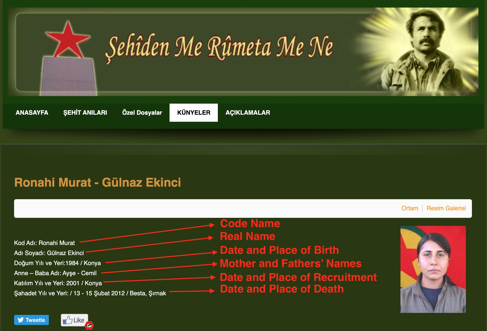Not all obituaries contain all of these fields; the PKK stopped reporting birth and recruitment information after 2012, and other fields are sometimes blank.
In addition to the biographical information, each obituary contains a set of pictures of the fallen militant:
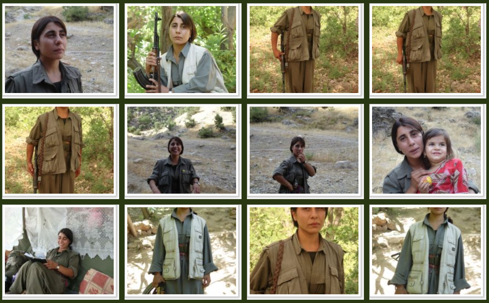The first step in this analysis is to collect the biographical data contained in these obituaries. To do this, I wrote a python script that navigates the PKK’s obituary website, grabs the information from the biographical fields, and parses it into a dataframe. The result is a spreadsheet in which each row is a militant, and each column contains obituary-derived information.
This procedure creates a database containing biographical information on 3,664 PKK militants who were killed in action. The photographs that accompany each obituary are also scraped, creating a database of nearly 20,000 images.
2. Age Estimation using a CNN
This is a picture of Zeynep Gasir, who was killed in 2015. Her obituary doesn’t list a birth date or recruitment date, but the pictures show her to be very young. We can get a rough idea of her age using Microsoft’s how-old.net tool, which uses a neural network to predict age and gender based on an image. The estimation suggests that she is roughly 11 years old.
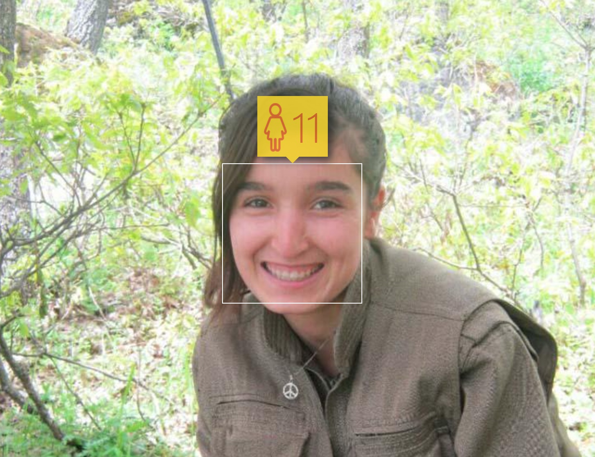Because the obituary database contains roughly 20,000 images, inputting them one by one into how-old.net would take a while. I automated this process in python, using this pre-trained Convolutional Neural Network (CNN) for age and gender estimation. It predicts the age for each image, and then calculates the average age across all images for the same recruit. This yields a ballpark estimate of a recruit’s age when biographical information is missing.
It’s worth noting that neural networks are still pretty bad at estimating someone’s precise age. I've tested several different pre-trained CNNs and results were similar. However, even if individual age estimates aren’t very precise, we can still use them to sort the database based on apparent age. Instead of going through 20,000 unsorted images looking for child soldiers, we can sort the database and begin looking at images in ascending order of apparent age, bringing the youngest-looking recruits to the top.
Analysis
How many child soldiers are there in the PKK?
To identify child soldiers, we need two pieces of information: the year a recruit was born, and the year they joined the PKK. Both of these dates are listed in the online obituaries for a large number of the individuals in the database, allowing us to plot the distribution of ages at which individuals join the PKK:
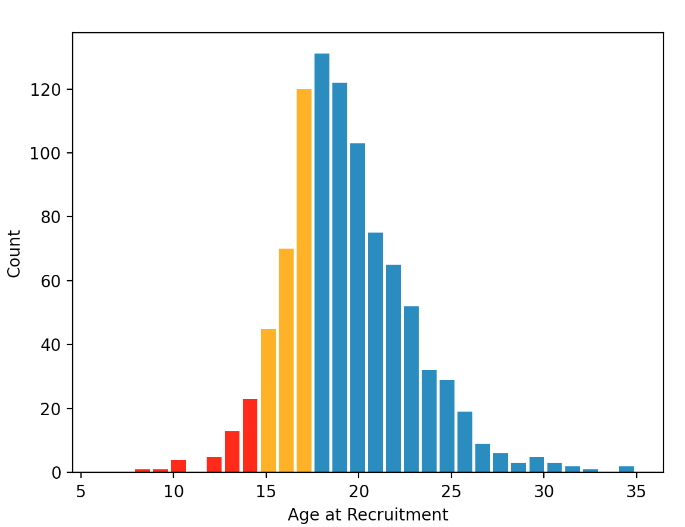Recruits under the age of 18 are shown in orange, and those under the age of 15 are shown in red. The plot above shows that the average age at which individuals join the PKK is 19. By the PKK’s own admission, there were 278 child soldiers killed between 2001 and 2012, constituting roughly 30% of the sample for which we have complete information.
This is likely to be an underestimation for two reasons. First, because recruits who joined as children but are still alive do not have obituaries. Second, because it relies partially on information reported by the PKK, who have an incentive to minimize the number of child soldiers they publicly admit to having recruited. Also, because the PKK stopped reporting birth and recruitment dates in 2012, this method can’t be applied to the 2,230 obituaries listed since then.
The image gallery posted with every obituary can help fill these gaps. The previous section details how a Convolutional Neural Network is used to estimate an individual’s apparent age based on their obituary photographs. When the database is sorted according to these estimates, the youngest-looking photographs are brought to the top of the list. Below are some of the images brought to the top of the dataset (scroll left/right):
- 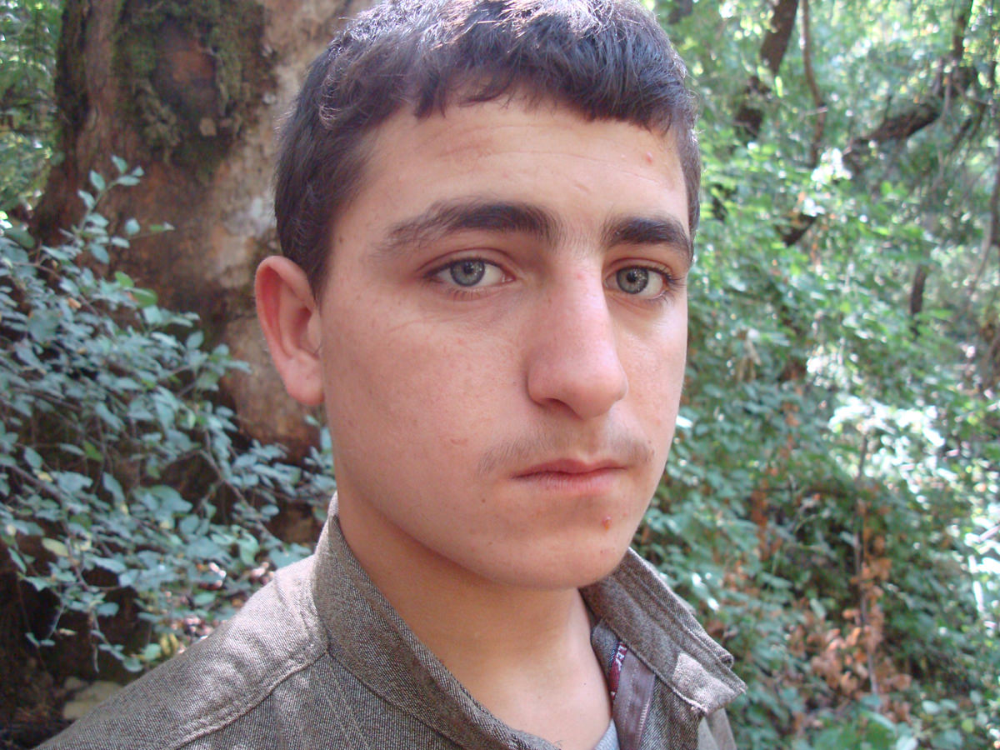
- 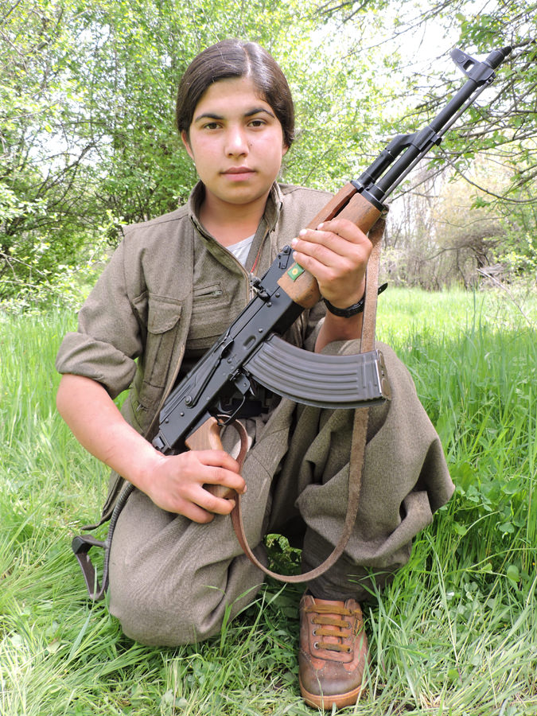
- 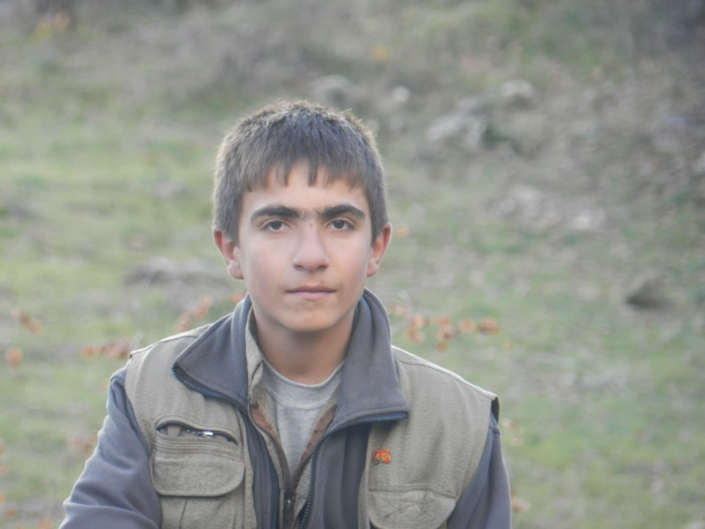
- 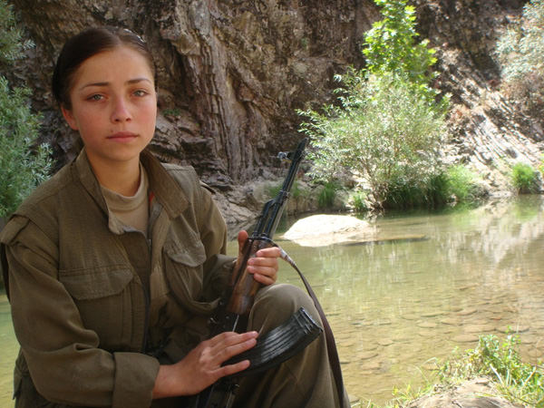
- 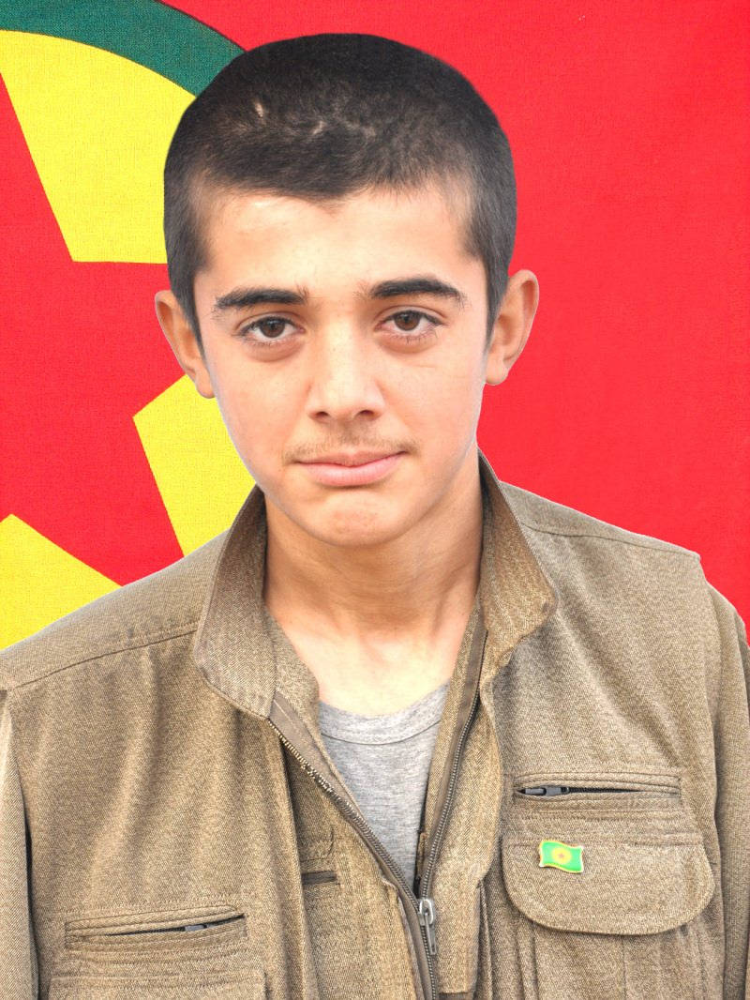
- 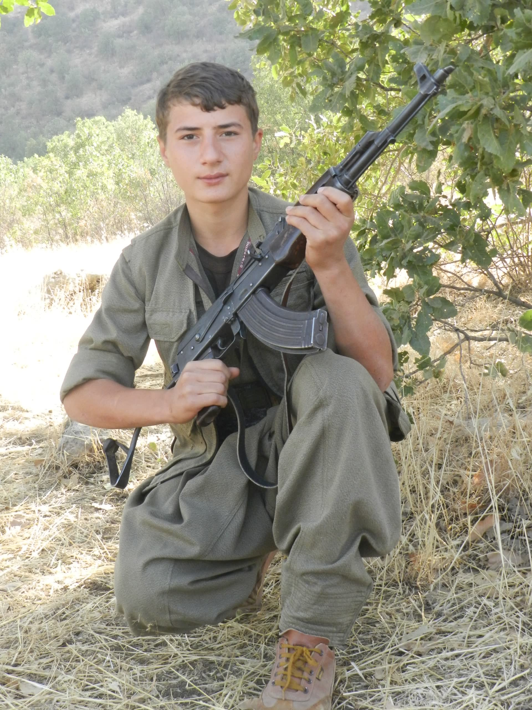
- 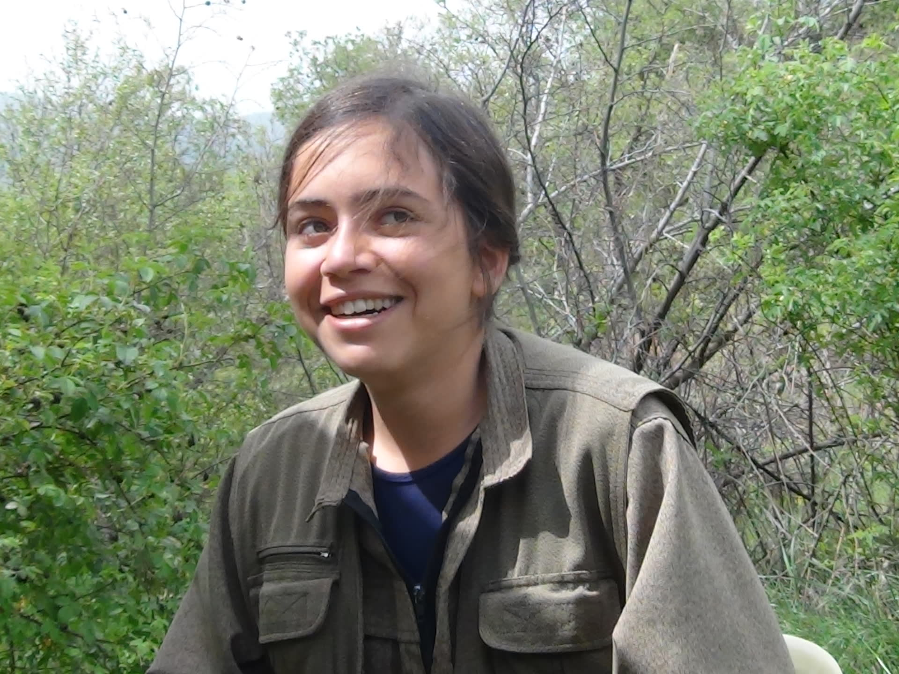
- 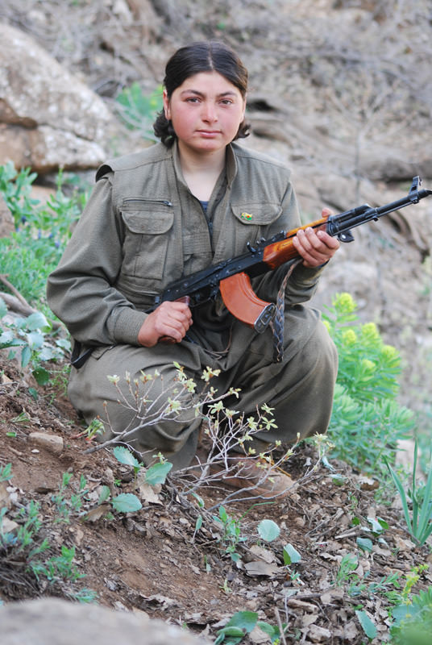
- 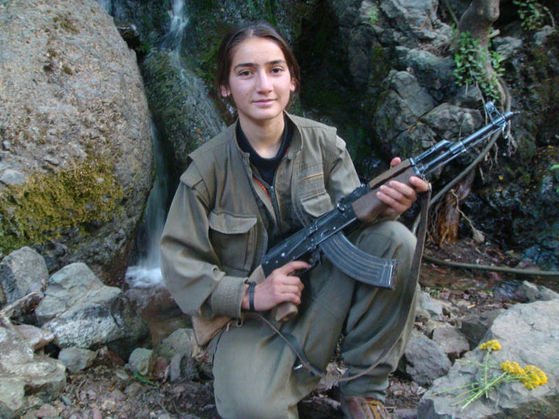
- 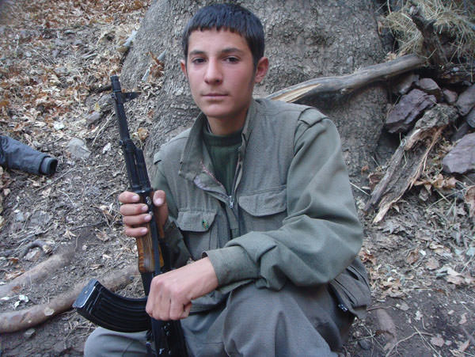
The individuals in these images are visibly underage, and based on the image database there are roughly 70 addititional individuals who appear clearly younger than 18. Hundreds more are borderline cases, however, which are harder to assess.
This is, again, a very conservative estimate because it relies on the obituary displaying images of the recruit as a child. Even though we know Gülnaz Ekinci joined the PKK at the age of 15, she died at the age of 27 and the images posted in her obituary appear relatively recent; her estimated age based on these images is 28. In total, there are 348 cases of child recruitment: 278 by the PKK's own admission based on the birth and recruitment years, and 70 additional cases based on the images. The true total, however, is likely to be higher.
How has the recruitment of child soldiers evolved over time?
Below is a bar chart showing the number of recruits who joined the PKK in a given year; blue denotes adult recruits, orange denotes recruits under the age of 18, and red shows recruits under the age of 15.
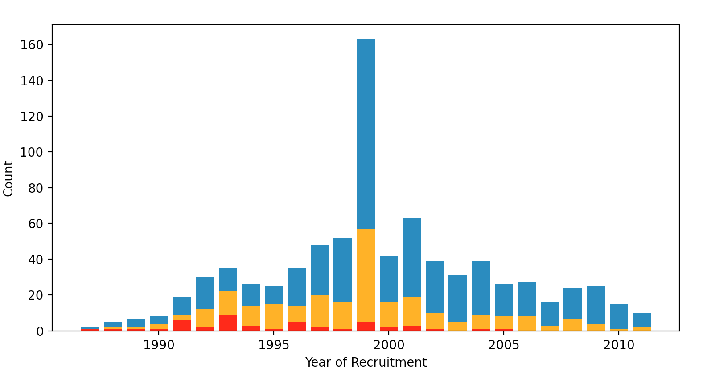Two main trends are visible. First, the recruitment of children seems to have been highest in the 1990s, at the height of the conflict. Between 1993 and 1996, more children were recruited to the PKK than adults.
The most obvious trend in this graph is the massive spike in recruitment in 1999. On February 15th of that year, the PKK’s founder and leader Abdullah Öcalan was captured and sentenced to death. Kurds in over 20 countries staged protests and in several cases stormed embassies. Several protestors were killed, and two more . Protests have been held in Turkey on February 15th every year since then. These heightened grievances are the likely cause of the spike in 1999: a former member of the PKK stated in an interview “The arresting and imprisonment of Abdullah Öcalan was effective [sic] in my decision to join the PKK.”
Though the absolute number of child recruits increased that year, they made up a smaller proportion of the total number of recruits than in previous years. This is especially true of children under the age of 16. After the large wave of recruitment in 1999, the recruitment of children steadily decreased in the following decade.
Taken together, these two trends seem to suggest that the recruitment of children increases when the PKK is under military pressure. Child soldiers made up the largest share of total recruits in the 1990s when fighting was most intense and recruitment was relatively low. Following a large recruitment event in 1999 and a period of ceasefire, the number of child recruits--especially those under the age of 16-- decreased considerably.
The graph below shows the number of obituaries listed on the PKK’s website each year.
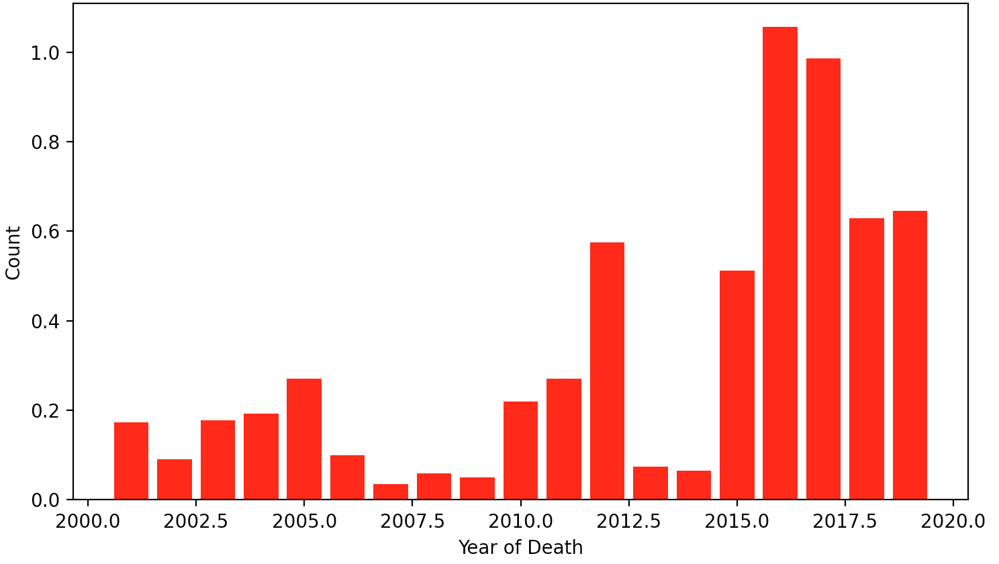The intensity of the conflict was low until 2011, when large scale hostilities resumed. A drop in casualties resulting from a two-year ceasefire period can be seen in 2013-2014, followed by the current period of high-intensity conflict.
Conclusion
The recruitment of children in armed conflict is a war crime; the reasons for wanting to monitor it are self evident. But the conventional approach of conducting in-person interviews isn’t a feasible way of systematically keeping track of the phenomenon. Imagine trying to understand a phenomenon as complex as the Coronavirus if the only tool you had at your disposal was going door to door (in a war zone). Identifying hotspots, trends over time, and demographic patterns would be utterly unfeasible.
For a long time, field interviews might have been the only way of gathering information on the recruitment of child soldiers. These days, there is sometimes enough information online to enable basic monitoring. Relying exclusively on the group's online presence, this analysis was able to identify over 300 child soldiers among the ranks of the PKK over the course of the past 20 years.